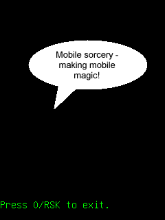

This example application hows how to use MoSync's Sound C API. The example demonstrates how to play and loop a sound once.

This example is included in the MoSync SDK installation in the /examples folder. For information on importing the examples into your workspace, see Importing the Examples.
This application plays an mp3 file with the message "Mobile sorcery - making mobile magic".